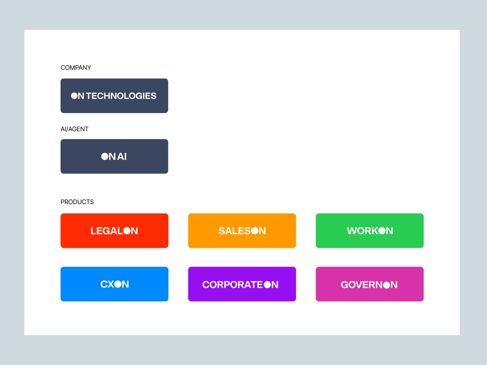
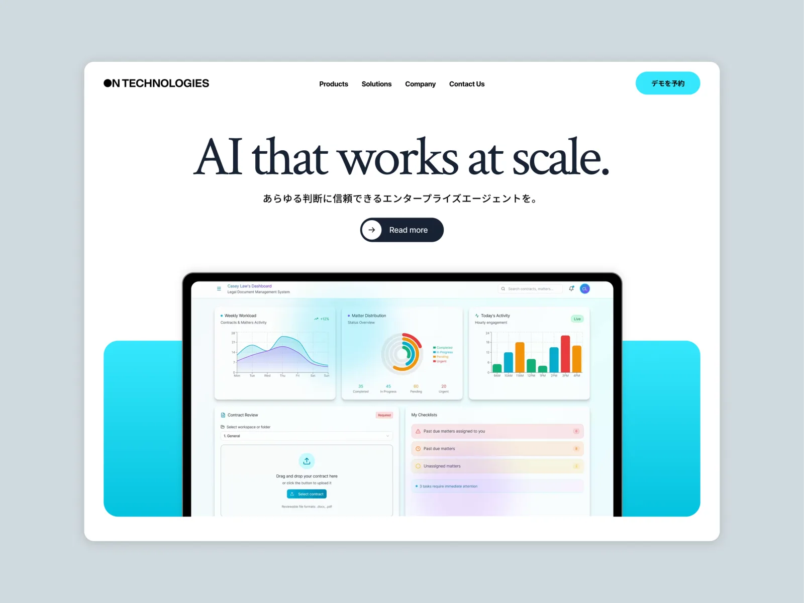
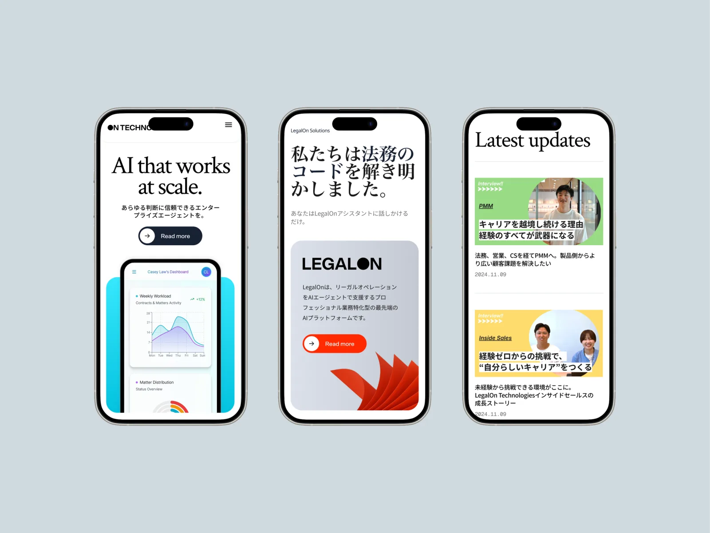
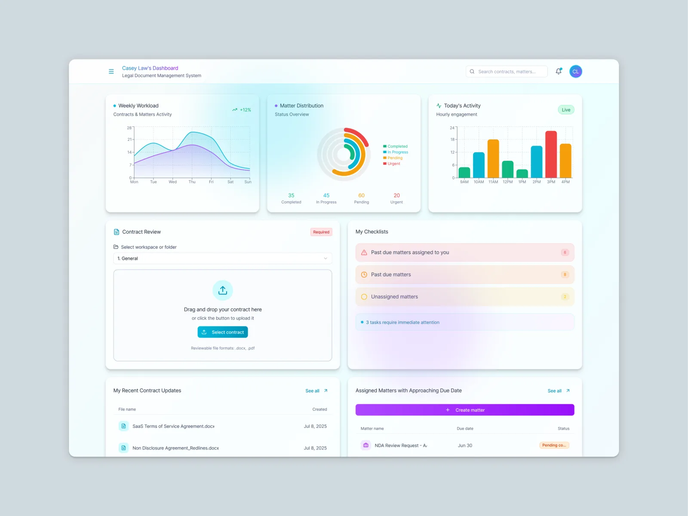

Project
LegalOn's AI Brand Platform
Global Brand & Product Platform
LegalOn built Japan's leading legal AI, then expanded into a broader suite of AI-powered business products. The new platform had to hold two opposing demands at once: one coherent global identity across seven products — LegalOn, SalesOn, CorporateOn, WorkOn, CXOn, DealOn, GovernOn — and enough room for each to stand on its own. The resolution was the "ON" concept: always on, always intelligent, always working — a shared lockup carried by every product, each with its own palette and identity.
See Project →